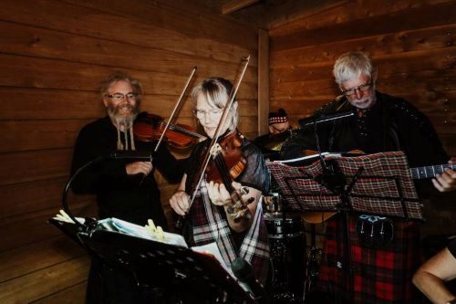
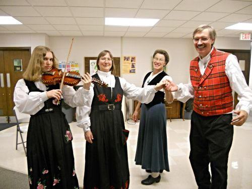

Norway


The music of Norway includes both traditional and modern styles, with a strong connection to its history and culture. Traditional Norwegian music is mainly divided into instrumental music (for dancing) and vocal music (songs and storytelling). Many traditional dances were performed at important events like weddings and holidays.
A key part of Norwegian folk music is the Hardanger fiddle, a special type of violin with extra strings that create a unique sound. Other traditional instruments include flutes, horns, and string instruments. Folk music often focuses on melodies and is passed down by tradition rather than written music.
There are also different cultural influences within Norway. For example, the Sami people have their own musical tradition called joik, a unique style of singing that is very expressive and often connected to nature and identity.
Norwegian folk music includes ballads and epic songs that tell stories about history, legends, and daily life. Over time, European dance styles like the waltz and polka were added, showing outside influence.
In modern times, Norway has many different music styles. It is known for classical composers like Edvard Grieg, as well as modern genres such as pop, jazz, and black metal. Some artists also mix traditional folk music with modern sounds.
Overall, the music of Norway combines strong traditional roots with modern creativity, making it an important part of the country's cultural identity.
Reference for Norwegian music